Buenos Aires Front
Máquinas y humanos haciendo música y sonidos.
En este espacio comparto mi música y reúno enlaces a los proyectos, instrumentos y herramientas que desarrollo bajo el nombre de U-MA.
Sacale el mute a tu celu y prendé la radio. Mejor con auris.
Aprendé, practicá y experimentá

Una serie de recursos para entender, aprender y explorar el diseño sonoro y la síntesis de audio. Todas estas web apps corren en el navegador de tu iPhone, Android, Mac, PC o Linux, y las podés instalar como app. Guardan tus settings y presets, no recolectan datos personales y son de código abierto.

¿Cómo car4j* se programa una de estas? Escribí tu bass-line, entendé los ligados, los acentos y los tiempos, y llevate un sheet para pasarla a tu 303 paso a paso.
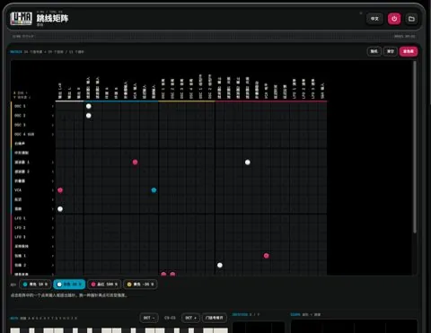
¿Qué pasa si conecto un LFO con un attack o con un release? Acá tenés una matriz de patcheo para probar lo que quieras con la calidez del Synthi. Olvidate de que es un sinte: acá la onda es patchear.

Practicá cómo hacer un Amen Brother o cómo hiphopearla. La idea es que pruebes cómo se escribe una línea de batería.
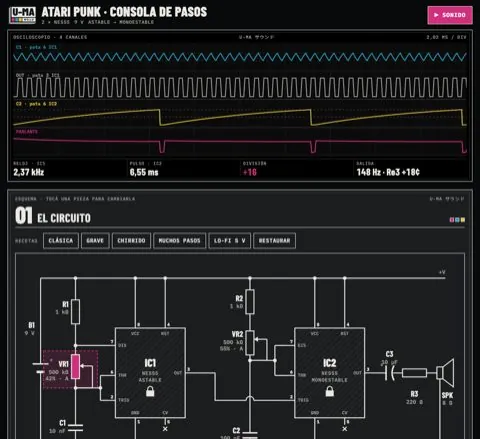
Armá una Atari Punk Console con dos 555. Si vas a construir la tuya, probá cómo cambia el sonido con el valor de cada pieza, miralo en el osciloscopio, probala a ver si te cierra y llevale la lista de componentes a tu dealer de confianza.
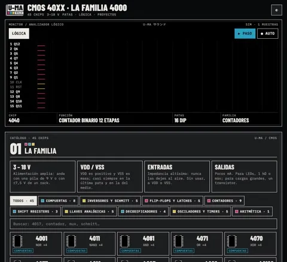
La familia CMOS 4000, 45 chips: patas, funcionamiento, simulación lógica en vivo, relaciones y un proyecto sonoro por chip.
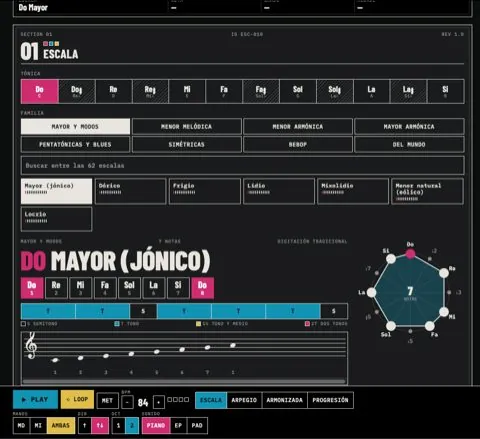
61 escalas de piano con digitaciones, arpegios, armonización y progresiones. Hacé crecer tu sonido y encontrá las sensaciones para tu música.

Si usás sintes, tenés que aprender a usar los deditos. Usá esta app para entrenarte, joven padawan.

Sí, «programar no es para vos», pero acá tenés una aproximación real y usable para dar tus primeros pasos en este lenguaje, que también sirve para norns.

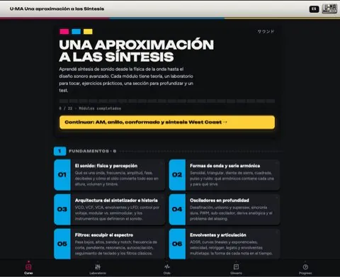
Un recorrido por las bases de todo esto. Es imprescindible que, aunque sea, «lo tengas visto»: acá hay un par de cositas visuales que te la hacen más asible.
Todos están en el GitHub de Buenos Aires Front. Se abren en el navegador, sin instalar nada; si querés, bajá el código desde cada repo.
Ver todo en GitHubScripts que suenan
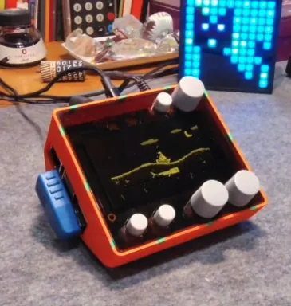
norns es un instrumento abierto creado por monome: un sinte mini con pantalla, tres perillas y tres botones que corre scripts escritos en Lua, con motores de sonido en SuperCollider. El norns shield es su versión DIY que se monta sobre una Raspberry Pi. Estos son los scripts que hago para él. Cada uno es un instrumento distinto, con su propio motor, pensado para tocar de verdad y meterle fantasía a tu sonido. También los encontrás en rackears.io y norns.community.

Synth ochentoso, puede contener trazas de synthwave, dreamwave y Windows 3.1.
;install https://github.com/buenosairesfront/chordex80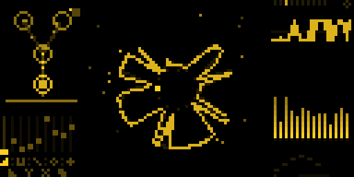
FM de 4 operadores, un DX7 shield.
;install https://github.com/buenosairesfront/chordexfm
Un sinte de strings para meter orquesta a tu sonido.
;install https://github.com/buenosairesfront/chordexstg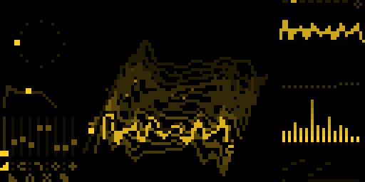
Wavetable para todos: barré los 8 bancos con sus 8 formas de onda.
;install https://github.com/buenosairesfront/chordexwt
Sonido de consola con estética tracker: 8 chips y 8 presets que van a gastar todas tus monedas y atrofiarte los pulgares.
;install https://github.com/buenosairesfront/chordexchip
Pads, texturas, drones... usá el movimiento para generar layers de sonido.
;install https://github.com/buenosairesfront/chordexabnt
El sinte flagship de U-MA: 3 voces con decenas de motores combinables para crear el sonido que buscás, y la posibilidad de secuenciar todo en un sequencer circular de tres pistas.
;install https://github.com/buenosairesfront/alto
Un cuerpo en 3D hecho de datos donde cada parte es una voz de drone: movelo, girá la cámara y desintegralo en partículas.
;install https://github.com/buenosairesfront/alan
Un mar que se toca solo: Tucker el velero, Mobba la ballena y Lea el ave son tres voces. Las olas eligen las notas y vos manejás el viento.
;install https://github.com/buenosairesfront/umi
Caja de ritmos hecha de electrónica rota: 3 voces con 3 máquinas cada una, patrones con probabilidad que se desfasan solos, stutter y estática de TV.
;install https://github.com/buenosairesfront/glitchTodos están en el GitHub de Buenos Aires Front. Copiá el comando ;install en maiden y después reiniciá la norns para que compile el motor de sonido.
Ver todo en GitHubHerramientas para norns
Diseñá tu script
Buscá tu sonido, diseñá tu imagen
Explorá el sonido de tu instrumento con Norns Sound Creator, buscá elementos gráficos para darle rostro a tu proyecto con Norns Canvas y exportá el código listo para pegar en tu script. Todo desde el navegador, en Mac, PC y Linux o en tu Android o iPhone.
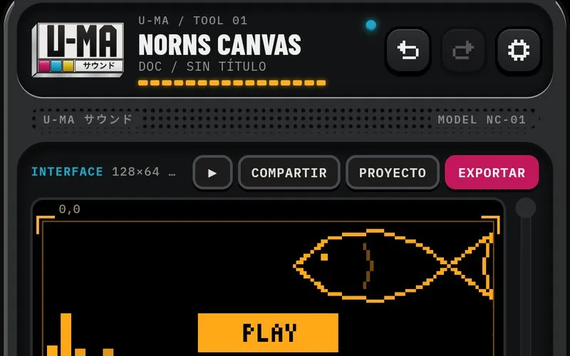
Probá cómo sería la cara de tu instrumento: elegí entre las formas prediseñadas, las de la galería o dibujá a mano. Cuando lo tengas, exportá el código Lua de screen.

Hacé tus propios
instrumentos
Prototipos, sintes, módulos y cosas electrónicas
 Próximamente
PróximamenteUna batería glitch construida a partir de un 40106 y un 4021.
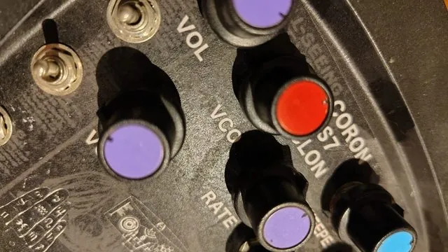
PróximamenteUn clon de esa pequeña bestia sobrada en versatilidad.
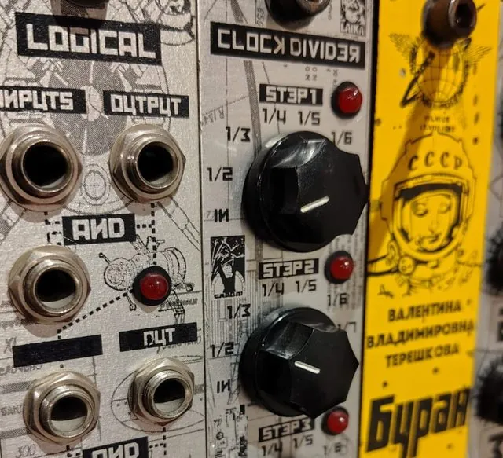
PróximamenteVCO, LFO, VCA, ADSR y más: todos proyectos DIY.
- Web appGate-03Secuenciador · TB-303
- NornsChordex 80Polisynth · acordes
- Web appMatriz de patcheoSinte modular web
- NornsaltoSinte · secuenciador
- Web appDrum PatternsCaja de ritmos
- NornsumiSinte · mar generativo
- Web appAtari PunkSimulador de circuito
- NornsalanDrone · cuerpo 3D
- Web appEscalasPiano · escalas
- NornsChordex FMFM · acordes